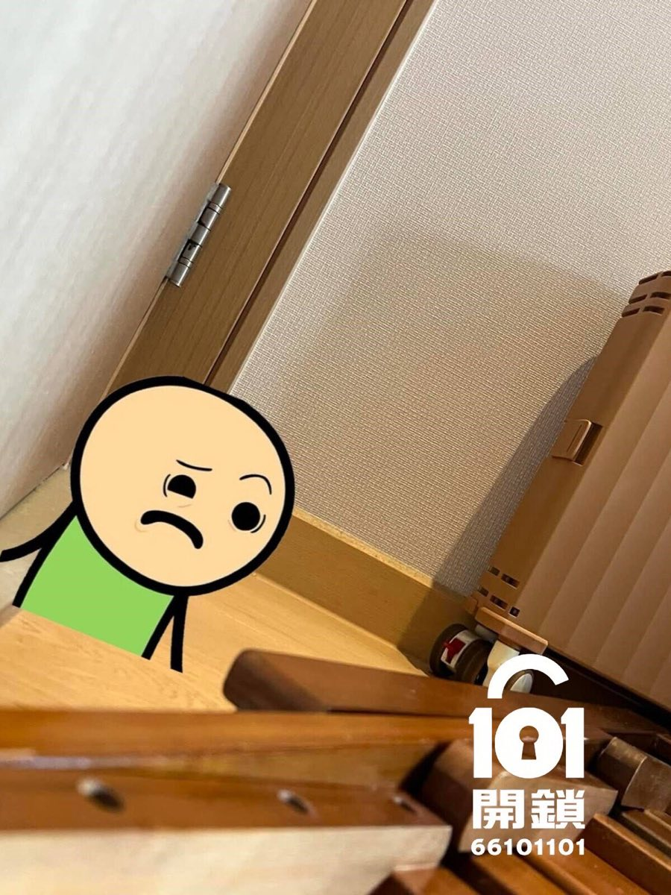

香港家居出口安全指南
門被雜物頂住打不開？大門開唔到的處理及預防
木梯、吸塵機、洗衣機、櫃桶或家具移位，都可能佔用門的開啟範圍，令人無法入屋或離開房間。這篇保留原文的主要家居情境，並整理成較清楚的判斷、預防及查詢流程。
- 先分辨鎖具或障礙物問題
- 不要撞門或強行伸入工具
- 傳相說明門向及可開程度

先講結論
大門開唔到，不一定代表門鎖壞了
香港居住空間有限，不少家庭會把木梯、吸塵機、鞋盒、工具箱或家具放在門後。物件如因碰撞、擺放不穩或震動而移位，可能頂住門扇，令大門只能開少量甚至完全打不開。
情況安全時：先停止撞門或硬推，聯絡同住者、業主或管理處，記錄門向、可開啟程度及可見線索，再安排合適評估。
原文四類卡門元兇
木梯、吸塵機、洗衣機及櫃桶為何會卡門？
以下保留原文的主要成因及預防方向，並把容易誤解為必然結果的描述改為風險情境。
木梯與長形工具
危險成因：摺梯、燙衫板、地拖或掃把直立靠牆時，受碰撞或擺放不穩影響，可能傾倒至門的活動範圍。
預防：平放於合適儲物空間，或使用穩固掛架及安全扣固定。
吸塵機
危險成因：直立式吸塵機或帶滑輪機身若靠近門口，傾倒或滑動後可能頂住門底或門扇。
預防：收納於指定位置，確保機身及喉管不在門的開啟路徑。
洗衣機與大型電器
危險成因：洗衣機若未調平、地面不穩或本身貼近門口，運轉時持續震動可能令位置改變。
預防：按產品指引調平機腳；如持續移位，應請合適人士檢查安裝及地面狀況。
櫃桶、鞋架與紙箱
危險成因：櫃桶未完全關閉，或紙箱、鞋架、玩具及寵物用品跌出，都可能阻礙大門或房門。
預防：避免在門後堆高物件，並確認近門櫃桶能保持關閉。
家居防卡指南
保持出口、通道與門的開啟範圍暢通
收納原則
- 木梯、燙衫板及長柄用品應平放或穩固固定。
- 吸塵機、地拖及掃把應遠離門的迴轉範圍。
- 門後避免堆放易跌物件，尤其不要疊高紙箱。
電器與家具
- 確保近門電器放置平穩，不會阻擋出口。
- 發現洗衣機反覆移位，應先檢查調平及安裝。
- 近門櫃桶、活動層架或寵物圍欄要保持固定。
每月兩分鐘
門後安全檢查清單
- 完整開關一次大門及常用房門，確認開啟範圍沒有雜物。
- 檢查櫃桶是否完全關閉，有沒有容易自行滑出的抽屜。
- 確認洗衣機、乾衣機或雪櫃與門口之間保留安全距離。
- 摺梯、長形工具、鞋盒及紙箱是否放置穩妥。
- 寵物用品、玩具或活動圍欄會否進入門的開關路徑。
保留原文情境
四種常見的屋內雜物卡門情況
這些情境用於協助判斷和預防，不代表已核實的指定屋苑個案，也不能預先保證處理時間或方式。
摺梯傾倒，大門只能打開少量
摺梯直立放在門後，受到碰撞或因擺放不穩而橫向傾倒，可能頂住向內開的大門。預防重點是平放或穩固固定梯具。
需要確認：門向、可開啟距離及門後是否有人。洗衣機移位，阻擋門的開啟路徑
洗衣機靠近門口且反覆震動移位，可能逐漸進入門扇範圍。應先按產品指引檢查調平；持續移位則安排合適人士檢查。
需要確認：電器與門的距離、地面及安裝狀況。櫃桶彈出，房門由外面推不開
近門的櫃桶如未關好或自行滑出，突出部分可能頂住房門。不要在未知門後情況下加力推門，以免損壞家具或傷及室內的人。
需要確認：櫃桶位置、門縫及房內是否有人。吸塵機或清潔工具倒下卡門
直立式吸塵機、地拖或掃把倚靠門邊，一旦倒下，機身、滑輪或長柄部分都可能阻礙門扇。
需要確認：障礙物類型、門可移動程度及有否曾強行處理。內容可信度說明：原文曾列出指定屋苑、精確分鐘數、工具及結果，但現有專案未有足夠原始相片與處理紀錄可供核實，因此此版本保留四類問題內容，改以去識別化情境呈現。
日後如取得客戶同意、原始前後照片、時間及處理紀錄，可再把相應內容更新為可驗證真實案例。
香港開門查詢
大門被雜物頂住，報價前要提供甚麼？
可先提供門外全相、鎖位近照、門向、目前可打開多少、可見或可聽到的障礙物線索、所在地區及管理處安排。如需要進入單位，亦須準備可核實的合法使用權資料。
相片只作初步溝通；實際處理方法、能否非破壞處理及收費，要視乎現場門鎖、門框和障礙物狀況。
FAQ
門被雜物頂住常見問題
大門開唔到，是否一定是門鎖壞了？
不一定。門鎖、門框、鉸位或門身變形可能造成問題；木梯、吸塵機、紙箱、櫃桶或移位電器亦可能阻擋門扇。應先記錄實際線索，不要自行斷定原因。
門被雜物頂住打不開，可以自行撞門嗎？
不建議。強行撞門可能令障礙物卡得更緊、損壞門框或傷及門後的人。情況安全時，先停止加力並聯絡同住者、業主或管理處。
門後櫃桶卡住，一定要破壞門鎖嗎？
不一定。能否非破壞處理取決於門向、障礙物位置、門縫、鎖具和門框狀況，以及之前有否強行操作。應先評估再確認方案。
情況安全時的查詢流程
先傳相、說明門向與所在地，再安排下一步
相片只用作初步溝通；處理方案、是否可行及實際收費，均須視乎現場情況、物業程序及合法使用權核實。
- 門外全相及鎖位近照
- 門向、可開啟程度與可見線索
- 合法使用權與管理處安排